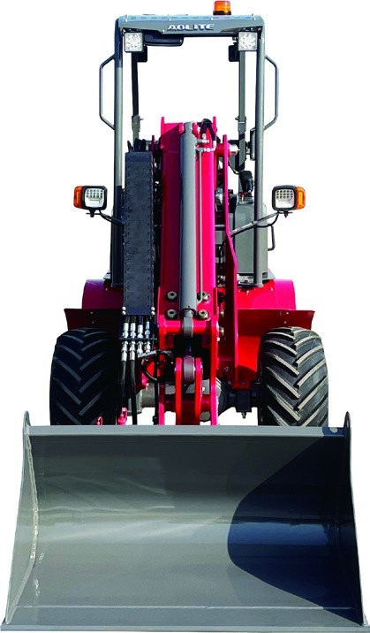
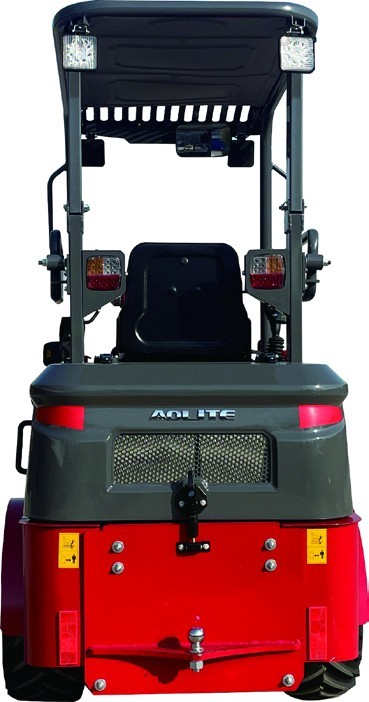
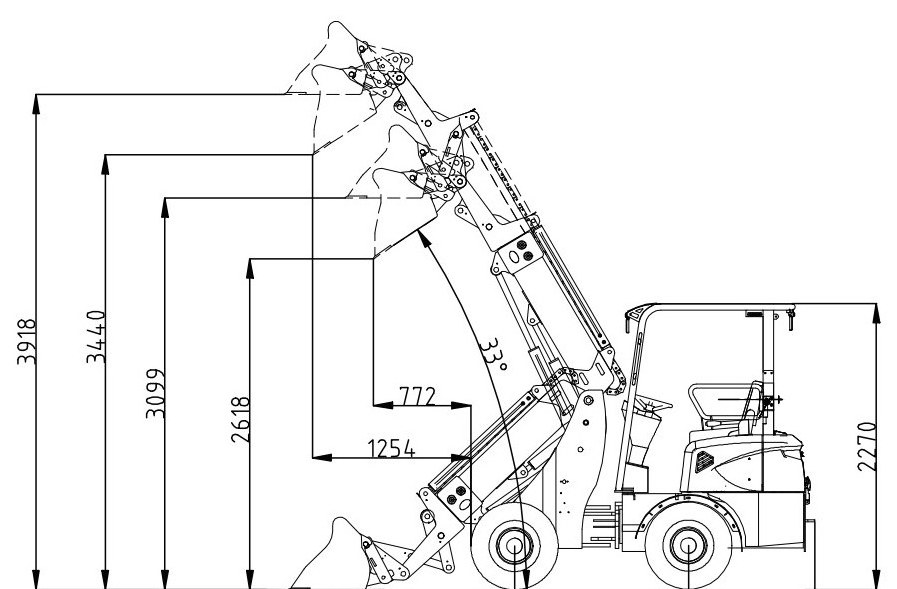

Telescopic Arm Wheel Loader — 600 kg rated load, 3,918 mm lift height, and only 1,260 mm wide.
📱 You scanned the code on the machine — good. This page is everything I would tell you if we were standing next to it, including the parts of the spec sheet most sellers skip.
600 kg
0.25 m³
18.5 kW Xinchai
2,235 kg
The TL800 is a compact wheel loader built around a telescopic arm. It is not a scaled-down version of a big loader, and it is not a skid steer with a different name. The telescopic boom is the whole point: it lets a machine that is barely 1.2 metres wide lift to 3,918 mm and reach 1,254 mm forward — numbers a rigid-arm loader of the same footprint simply cannot produce, because a rigid arm trades reach for stability the moment you raise it.
Here is where I stop selling and start being useful, because the customers who end up disappointed are the ones who were told yes to everything. With a 600 kg rated load and a 0.25 m³ bucket, the TL800 is a materials-handling and loading machine. It is not an excavator — it does not dig to depth, and no bucket or attachment changes that. It is not a bulk earthmoving machine — 18.5 kW moves material at a working pace, not at a production pace, and if your day depends on moving hundreds of cubic metres, you need a bigger machine and a bigger budget. If your supplier tells you this class of loader does all of it, ask him which site he has personally watched it do it on.
Where the TL800 wins is the sites that are hard to reach and hard to feed: narrow alleys, yards behind a shop, inside a warehouse, between rows in an orchard or a livestock shed, spread along a roadside where a bigger machine cannot turn around. 1,260 mm wide, 2,270 mm tall, 4,290 mm long, wheelbase 1,380 mm, 45° steering angle. That footprint is the reason this machine exists, and it is the first thing I ask a buyer to measure. Hydrostatic drive is the second reason: it is smooth and precise at walking speed, which is exactly the speed you work at when the wall is close or the operator is learning.
The quick change system is not a gimmick either. A bucket, a set of pallet forks and a blade on one carrier covers work that would otherwise need two or three machines. One condition, and this is the part buyers regret skipping: tell me your attachments at order time. Some attachments need hydraulic circuits fitted at the factory, and fitting them later on a finished machine costs more than doing it on the line.
Straight from the specification sheet — with a plain explanation of what each one means on a real site.
1,260 mm wide and 2,270 mm tall. It goes through a garden gate, down an alley and inside a shed that a conventional loader has to stop outside of.
3,099 mm lifting height with the boom retracted, 3,918 mm fully extended, and 1,254 mm of forward reach. Reach is what lets it load a truck from the side instead of head-on.
45° steering angle on a 1,380 mm wheelbase, with 200 mm of ground clearance. It turns in a yard where a bigger machine would have to reverse three times.
Quieter than a conventional diesel loader of this class — which is not a comfort detail. It is the difference between being allowed to work near houses, livestock or a night shift, and being sent away.
Factory-fitted safety and start protection on the machine. The exact item list varies by build and by your market's inspection rules — ask me for the current list for the unit you would be ordering, and I will send it in writing.
Bucket, forks, blade and other attachments swap in minutes instead of hours. One carrier, several jobs — as long as the hydraulic circuits are decided when the machine is ordered.

This is the rear of the machine. Nothing dramatic back here — and that is the point. The engine cover opens wide for daily checks, the counterweight is sized to the 600 kg rated load rather than to a brochure photo, and the hitch gives you a recovery point when a machine this small gets into soft ground.
1,260 mm wide, 2,270 mm tall. Those two numbers are the ones that decide whether this machine can do your job at all, and they are the first two I ask you to check on site.
— Vivian
Every figure below comes from the TL800 specification sheet. If a number here decides your purchase, confirm it with me in writing on the quotation — that is the version that counts.
| Parameter | TL800 |
|---|---|
| Performance | |
| Rated load | 600 kg |
| Overall weight | 2,235 kg |
| Bucket capacity | 0.25 m³ |
| Triple combined time (lift, dump, lower) | 9 s |
| Max. steering angle | 45° |
| Min. ground clearance | 200 mm |
| Travel speed | 7 km/h low / 14 km/h high |
| Dimensions | |
| Length | 4,290 mm |
| Width | 1,260 mm |
| Height | 2,270 mm |
| Wheelbase | 1,380 mm |
| Wheel tread | 945 mm |
| Bucket length | 1,115 mm |
| Telescopic arm — loader performance | |
| Dumping angle | 33° |
| Dumping reach — boom retracted | 772 mm |
| Dumping reach — boom fully extended | 1,254 mm |
| Dumping height — boom retracted | 2,618 mm |
| Dumping height — boom fully extended | 3,440 mm |
| Lifting height — boom retracted | 3,099 mm |
| Lifting height — boom fully extended | 3,918 mm |
| Engine, transmission and hydraulics | |
| Engine model | XINCHAI 3B11Y51P254 |
| Engine brand | XINCHAI |
| Rated power | 18.5 kW |
| Rated speed | 2,400 r/min |
| Transmission | Hydrostatic drive system |
| Hydraulic pump | Variable displacement piston pump |
| Tyres and brakes | |
| Tyre size | 26x12.00-12 |
| Tyre pressure | 0.25 MPa |
| Tyre quantity | 4 |
| Working brake | Drum oil brake |
| Parking brake | Drum handbrake |

One page, all the figures above in the factory's own layout — useful when you are back in the office comparing machines, or when your mechanic wants to see the engine and tyre details. It opens on any phone and any laptop, and it prints cleanly at A4.
⬇️ Download the TL800 spec sheet (PDF, 0.7 MB)Prefer it in your inbox, or want the figures in a spreadsheet format for a tender? Email me and I will send it the same day.
Ask yourself: what will it lift, and how often? If the honest answer is pallets, sand, gravel, fertiliser, hay, feed or snow — and your site is too tight for a bigger loader — then the TL800 is the right tool and the telescopic arm will earn its money every week. If the honest answer is "I need to dig foundations" or "I move a thousand tonnes a week", then this is the wrong machine, and I will tell you that instead of taking your deposit.
Send me the narrowest gate, the tightest turning space and the heaviest thing you need to lift. I will tell you yes or no in one message — and if it is no, I will tell you what to buy instead.
— Vivian
Quick answers from the factory side. Need something specific? Send me a message →
A 600 kg rated load with a 0.25 m³ bucket, on a hydrostatic drive system. That is a materials-handling rating: pallets, gravel, sand, feed, fertiliser, hay, snow. It is not a digging rating, and it is not a bulk earthmoving rating — for those jobs you need a different class of machine, and I would rather say so now than after your deposit.
Lifting height is 3,099 mm with the boom retracted and 3,918 mm fully extended. Dumping height is 2,618 mm retracted and 3,440 mm extended, with forward reach of 772 mm retracted and 1,254 mm fully extended. That forward reach is the practical difference: it lets you load a truck or a spreader from the side of a narrow yard instead of needing a straight run at it.
1,260 mm wide, 2,270 mm tall, 4,290 mm long, with a 1,380 mm wheelbase, 945 mm wheel tread, 200 mm ground clearance and a 45° steering angle. Send me the narrowest gate and the tightest turning area on your site and I will give you a straight yes or no rather than a maybe.
Yes — the machine is supplied with a quick change system, so a bucket, pallet forks, a blade and other attachments can be swapped in minutes rather than hours. Two rules from the factory side: tell me your attachment list when you order, because some attachments need hydraulic circuits fitted during assembly; and remember every attachment adds weight and reduces what the machine can safely lift, so check the combination rather than just adding it up.
XINCHAI 3B11Y51P254, rated 18.5 kW at 2,400 r/min, driving through a hydrostatic transmission with a variable displacement piston pump. It was chosen as a simple, widely serviced industrial engine rather than for a peak power figure — on a machine that works in remote places, filters and service parts you can actually buy matter more than a number on a brochure.
Width of the narrowest gate, the heaviest thing you lift, and the country it ships to — that is all I need to tell you whether the TL800 fits, and what it costs delivered.
💬 Message me on WhatsApp Request a formal quote →